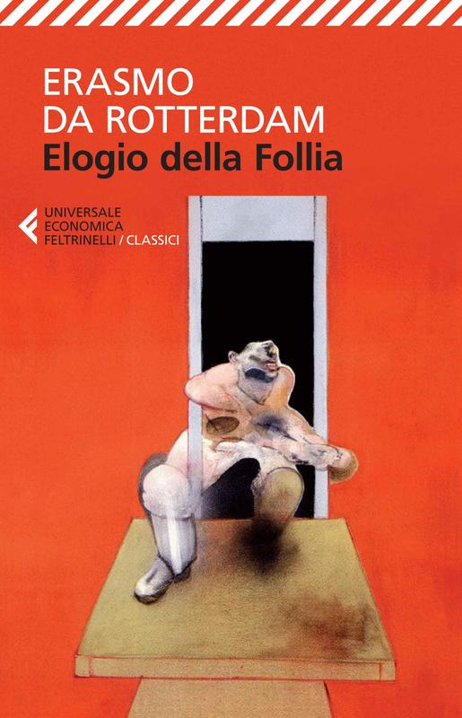
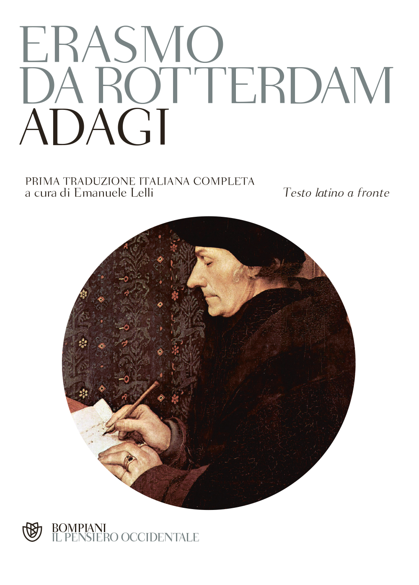
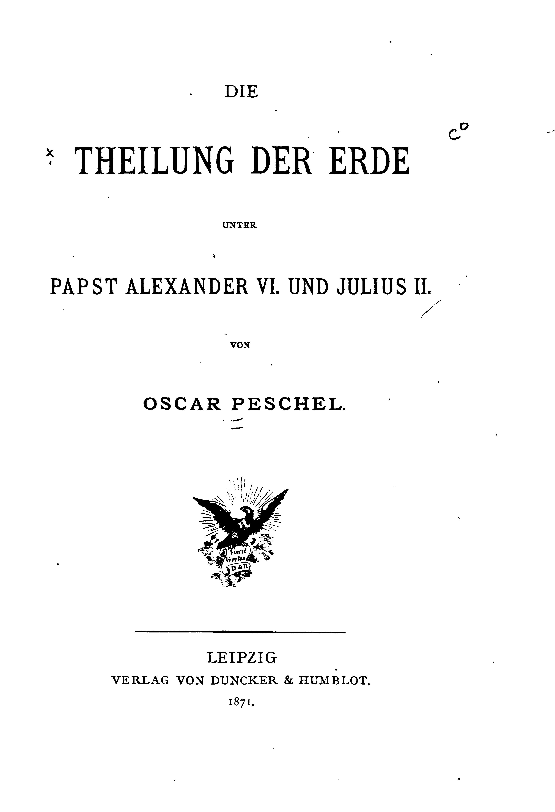
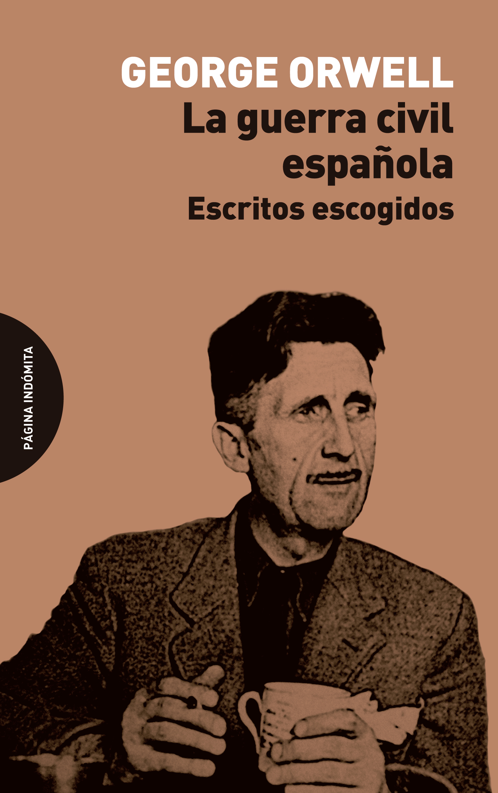

55:45 · 11 OPERE
Erasmo da Rotterdam, Papa Giulio scacciato dai cieli.
Il filo del discorso
Una chiave pontificia non basta ad aprire la porta del paradiso. Papa Giulio, accompagnato da un genio e da una scorta poco celeste, incontra un Pietro che non riconosce nei suoi comportamenti il significato delle cariche di cui si vanta. Dr Divago legge e commenta il dialogo satirico attribuito a Erasmo, nella edizione curata da Silvana Seidel Menchi. La distanza fra parola e azione è il primo filo della conversazione: il potere si presenta come custode del bene, ma cerca denaro, prestigio e dominio. La caricatura del personaggio viene mantenuta distinta dalla documentazione storica sulla persona di Giulio II. Il testo viene collocato nel primo Cinquecento, fra guerre italiane, sviluppo della stampa e Riforma. La discussione comprende il rapporto con Venezia, le indulgenze e il problema della paternità di un libello che Erasmo aveva interesse a non firmare pubblicamente. Il relatore propone anche una propria ipotesi di partecipazione di Tommaso Moro alla prima stesura: la scheda la conserva come congettura, senza trasformarla in una collaborazione accertata. Gli Adagia, l’Elogio della follia e Il Principe aiutano a ricostruire un ambiente di riflessione sul rapporto fra cultura, religione e politica. La lettura procede attraverso scene e risposte. La chiave della potenza è distinta da quella della conoscenza; la esibizione delle insegne non sostituisce la santità; il tornaconto personale viene confrontato con un modello di servizio. Giulio immagina di poter mutare i nomi delle cose se cambia il vincitore, e di alimentare la devozione tenendo i fedeli a distanza. Dr Divago vi accosta Orwell, Kafka e il Grande dittatore di Chaplin. La satira e la vicinanza diventano strumenti per ridimensionare il prestigio di chi pretende di essere superiore agli altri. Da questi passaggi nasce il confronto più polemico con la pandemia. Il relatore collega paura, coperture ideali della guerra e rimedi peggiori del male alla propria critica delle restrizioni. Il paragone illustra il suo modo di leggere il potere, ma non dimostra che la emergenza sanitaria fosse inventata o che ogni intervento producesse più danni della malattia. I conteggi dei morti richiedono periodi omogenei e fonti precise; anche la affermazione sul respirare anidride carbonica attraverso le mascherine necessita della correzione scientifica riportata nelle note. Nel finale torna la differenza fra una autorità che usa le parole come strumenti di dominio e una parola capace di dare significato alla vita. Genesi e Vangelo di Giovanni sostengono questa lettura teologica. La voce di Pietro chiede coerenza con il modello di Cristo, mentre Giulio continua a identificare la Chiesa con gli apparati e con se stesso. La conclusione interpreta il tiranno come una figura che tenta di sostituire la libertà e la uguaglianza con il proprio arbitrio. È un itinerario letterario, etico e politico: gli aneddoti sugli artisti e le diagnosi generali della società restano interpretazioni del relatore, non prove che un dipinto, una posa scultorea o una frase satirica risolvano da soli la storia.
I libri nel discorso

Papa Giulio scacciato dai cieli
Copertina: Argo, 1998
Papa Giulio scacciato dai cieli, Erasmo e la cura di Silvana Seidel Menchi espliciti. La copertina qui mostrata è della precedente edizione Argo, distinta da Giulio, Einaudi 2014.
Passaggio 0:37 ↗ · Fonti e libro ↗
Elogio della follia
Copertina: Feltrinelli · edizione di riferimento
L’Elogio della follia e la data 1511 sono nominati nel contesto delle opere di Erasmo.
Passaggio 16:52 ↗ · Fonti e libro ↗
Adagia (Adagi)
Copertina: Bompiani · 2013
Immagine autentica dell’opera, controllata visivamente; l’edizione di riferimento non è attribuita al filmato.
Gli Adagia sono nominati, descritti e consigliati come lettura quotidiana; 1515 è una fase della storia editoriale, non il suo inizio.
Passaggio 17:18 ↗ · Fonti e libro ↗
Il Principe
Copertina: Feltrinelli · 2013 · a cura di Ugo Dotti
Immagine autentica dell’opera, controllata visivamente; l’edizione di riferimento non è attribuita al filmato.
Il Principe o De principatibus di Machiavelli, composto nel 1513 e pubblicato nel 1532.
Passaggio 18:54 ↗ · Fonti e libro ↗
Die Theilung der Erde unter Papst Alexander VI. und Julius II
Identificazione probabile
Frontespizio originale del 1871, non copertina esterna: Frontespizio dell’edizione originale, Leipzig, Verlag von Duncker & Humblot, 1871, 40 pagine. Esemplare della Harvard University digitalizzato da Google e conservato su Internet Archive. Non è una copertina esterna né la copertina della ristampa moderna ISBN 9783428167364; nessuna edizione specifica è certificata nel filmato.
Frontespizio dell’edizione originale, Leipzig, Verlag von Duncker & Humblot, 1871, 40 pagine. Esemplare della Harvard University digitalizzato da Google e conservato su Internet Archive. Non è una copertina esterna né la copertina della ristampa moderna ISBN 9783428167364; nessuna edizione specifica è certificata nel filmato.
Nel passaggio: 1186.22–1197.82 s: «un geografo tedesco dell’800 che si chiama Oscar Peschel»; il relatore .82–1211 s, deforma il titolo tedesco. I passaggi fino a 1229.17 s, descrivono la divisione del mondo connessa ai papi e alla scoperta dell’America. Autore, titolo completo e 1871 verificati sul frontespizio, non ricostruiti come parlato testuale.
Passaggio 19:57 ↗ · Fonti e libro ↗
Il grande dittatore (The Great Dictator)
Grafica dell’edizione video Criterion: Film statunitense del 1940, United Artists, regia e sceneggiatura di Charles Chaplin, 125 minuti. Immagine della grafica Criterion, numero 565, disegnata da Olly Moss; non copertina libraria o locandina originale.
Grafica autentica della edizione video, con le due identità rappresentate in orientamenti opposti. La voce riguarda un film.
Charlie Chaplin e Il grande dittatore sono un esempio esplicito di critica satirica del potere.
Passaggio 22:36 ↗ · Fonti e libro ↗
Looking Back on the Spanish War
Identificazione probabile
Copertina: Página Indómita, 2025
Copertina della raccolta che contiene Looking Back on the Spanish War in traduzione spagnola, come documentato dai titoli originali nel campione dell'editore. Edizione illustrativa, non identificata nel video.
Orwell e il passo sulla eventuale riscrittura dei bombardamenti di Londra: collegamento probabile al saggio già identificato in repertorio.
Passaggio 29:33 ↗ · Fonti e libro ↗
Il castello (Das Schloss)
Copertina: Suhrkamp, edizione tedesca in brossura, 423 pagine, prima uscita della collana 2006, ristampa 10 luglio 2025; romanzo pubblicato postumo nel 1926.
Immagine autentica dell’opera, controllata visivamente; l’edizione di riferimento non è attribuita al filmato.
Kafka e il castello visto da lontano sono nominati nel discorso sulla distanza.
Passaggio 36:15 ↗ · Fonti e libro ↗
Genesi
Copertina: Einaudi, I libri della Bibbia / Einaudi Tascabili, 2000; introduzione di Steven Rose
Copertina dell’edizione autonoma Genesi, nella serie I libri della Bibbia, con introduzione di Steven Rose. Edizione scelta come riferimento iconografico; nessuna edizione è confermata nel video.
Genesi e la creazione attraverso la parola sono espliciti; segue il richiamo al serpente e al diventare come Dio.
Passaggio 48:43 ↗ · Fonti e libro ↗
Vangelo secondo Giovanni
Copertina del volume completo: San Paolo, 2014 · Nuova Versione dai Testi Antichi · edizione di riferimento
Vangelo secondo Giovanni è un libro della Bibbia. L’immagine mostra il volume completo San Paolo di riferimento, non un’edizione autonoma del singolo libro e non una versione identificata nella citazione.
Il Vangelo secondo Giovanni e il Verbo fatto carne sono espliciti.
Passaggio 48:51 ↗ · Fonti e libro ↗
La Repubblica
Identificazione probabile
Copertina: Laterza · La Repubblica · edizione con testo a fronte di riferimento
Immagine associata all’ISBN di riferimento e controllata visivamente; edizione e traduzione non identificate come quelle citate o lette nel video.
Platone e la analisi del tiranno: titolo non pronunciato, collegamento probabile alla Repubblica, non citazione letterale.
Passaggio 53:31 ↗ · Fonti e libro ↗